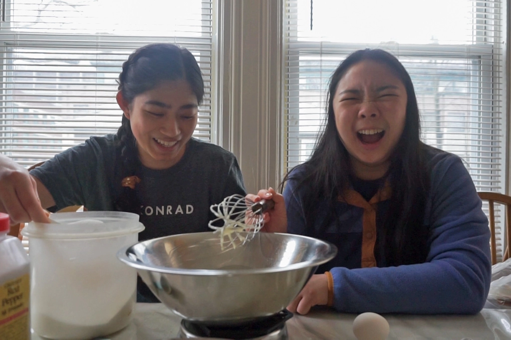
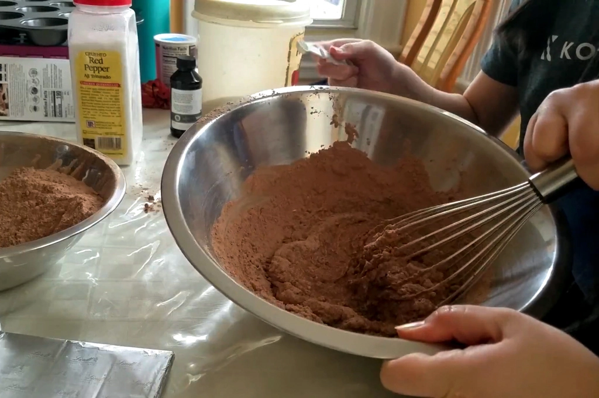
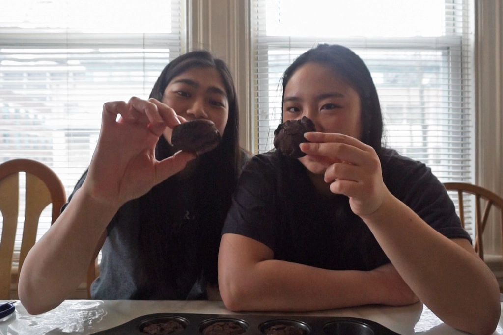

Making Brownies Without a Recipe
Mar 4 - Written by Bonnie and Emily
Have you ever wondered what it would be like to bake without all the precise science of measuring out ingredients? Have you ever just wanted to throw away all your measuring cups and just vicariously dump everything into a bowl?
Well, we decided to try it out and bake some brownies without a recipe while guessing on the required measurements. Drawing inspiration from seeing the Try Guys and other Youtubers do this, we wanted to put our baking skills to the test to see if we could do better. So why did we choose brownies? We wanted to make something that was a little more forgiving so that if we messed up, there could still be the potential it’ll taste good. We’ve also never made brownies from scratch so it was the perfect dessert to attempt to make.
Since we’re both experienced bakers, we knew we should separately combine the wet ingredients and dry ingredients before combining them together. The tricky part was determining the quantity of wet and dry ingredients. Using our knowledge from making brownies in the past, we knew the mixture should be similar to cake batter but thicker. So with that in mind, we started out with a large quantity of dry ingredients only to realize that we would need to add a concoction of various wet ingredients for the batter to actually look right.
After experimenting with adding some buttermilk because we didn’t have regular milk, and some oil, we finally achieved a consistency that looked about the same as the Trader Joe’s brownies we were familiar with. We also added a few chunks of dark chocolate into the batter in an attempt to provide more chocolate flavor. From there, we portioned out the dough into a cupcake tin as we didn’t have a small enough pan for the quantity of batter and baked for an unknown amount of time. We started with 15 minutes and realized that wasn’t enough time so we baked them for another 5 minutes for a total of 20 minutes.
While the brownies were baking, the smell of chocolate filled the room so we assumed things were going well. It wasn’t until the brownies cooled and we took them out that we realized they weren’t the soft, fudgy brownies we were used to. Since we had added way too much flour and cocoa powder we ended up with some very dry and dense brownies. So hard on the outside that they surpass a drop test without breaking or even a dent in sight. The interior however, was quite soft, very much like the texture of cake but the taste wasn’t great.
After this experience, we decided to actually compare what we did to a recipe and we realized that our biggest mistake was adding way too much flour and cocoa powder. Other than that, the other measurements weren’t far off. We also added oil and buttermilk to our batter which wasn’t in the recipe we looked at but if we didn’t add that, we likely would have ended up with an even drier and denser brownie.
Whether you can even consider these brownies is up for debate; however, this goes to show that measuring your ingredients is very important when it comes to the success of your baked goods. No matter how tedious you find it, you can’t get lazy or else whatever you make can easily become a failure like our brownies.